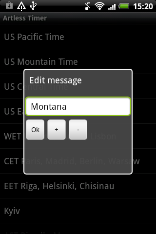

Artless Timer User Manual
It is easy to add Artless Timer widget. Just use standard way for adding widgets in you phone and select Artless Timer.
When you add widget the settings window will appear containing several items. After entering the information in this box, you must call the system menu button and select "Save". Setup consists of several steps. Each of them is optional. The new user interface appears in version 3. All the logic of the application left the same but UI became a little frendlier. Here will be presented both the interfaces. The user can switch between them using application preferencies.
1. Select widget information type.
Click the item "Time" and select one of types:
or
«Time zone (simple)», allows you to select a zone from the list.

It is possible to edit list of the time zones, just use long press on the list item to be able rename or delete it, or add a new one. When you add a new item the list of detailed time zones appears.
«Time zone (detailed)», allows you to select a zone from the list of zones obtained from the system. Its content depends on your device.
If the display text was not changed before this step, the zone name is used.
«Manual entry», allows you to enter deviation from your time.
or
«Counter, note», starting to count time from the current moment.
«Countdown timer», allows you to enter the date and time of the moment to which timer will count.
Also you can use calendar event to initiate the data.
To do this, tap the "Get from Calendar" button, choose one of the calendars and one of the events.
The name of the event is used as the display message if you did not edit the message before.
After reaching this moment, the widget will display a counter of covered time.
or
This type allows you to add this event to one of system calendars, if you want. When the setting will be saved the system window for adding event will occur.
«Periodic», allows you to enter the periods for counting time. It could be useful for any periodic events, like making reports, medicine taking or watering the flowers.
or
You can enter period by setting the duration of days, hours and minutes, the period will starts at the time of adding widget. Although you can enter exact time of a day to which the counting will act - just check exact time option.
Check the counting down option to define whether you want to add counter or countdown timer.
2. Select display message.
Using the menu item "Select Text", you can select the contact's name from the phone book or one of the templates. It is also possible to change the text by selecting the "Display Message" menu item.
It is possible to edit list of the templates, just use long press on the template item to be able rename or delete it, or add a new one.
In new interface this step is integrated with the next one.
3. Appearance settings.
Check the "Use 24h time format" option to display the time in the 24 hours format and the "Day of the Week" to display the day of the week.
Use "Text size" menu to set the text font size.
Widget text and background colors are set using the menus "Background color" and "Text color". The color picker tool with two color bars is used. In the lower part there are two buttons, "This color" and "Def color".
Colors in the first match the currently selected background and text color. Color of the second selected item (text or background) do not changes and conform to the standard color for quick selection. Click one of the buttons to save the color.
The default color for background is transparent, and for the text is black.
To choose predefined color sets use "Color scheme" menu. You can add or modify the list of color schemes. To do that use long press on the list item.
You can change standard text messages using "Standard messages" menu.
The new interface contains one dedicated window for all appearance settings.
4. Getting information and resetting the timers.
Click on widget to get information about widget parameters such as type, start date etc. Here you can edit appearance settings.
For counter or periodic timer you can click "Reset" button to change the moment of start to current moment.
If you want to hide the text of the widget, you can press "Hide/Show text" button. The text of hidden widget can be modified using "Standard messages" menu. It could be empty.
Note that some countries are situated in several time zones. Thus, be sure to check selected data and result value. Also, keep in mind, that time zones database in your device could be obsolete. For example, the changes for Russian Federation are not reflected in most devices, although you can use simple time zone list where explicit declaration is used to select correct values.

{kind=link}
{kind=link}
{kind=link}
{kind=link}
{kind=link}
{kind=link}
{kind=link}
{kind=link}
{kind=link}
{kind=link}
{kind=link}
{kind=link}
{kind=link}
{kind=link}
{kind=link}
{kind=link}
{kind=link}
{kind=link}
{kind=link}
{kind=link}
{kind=link}
{kind=link}
{kind=link}
{kind=link}
{kind=link}